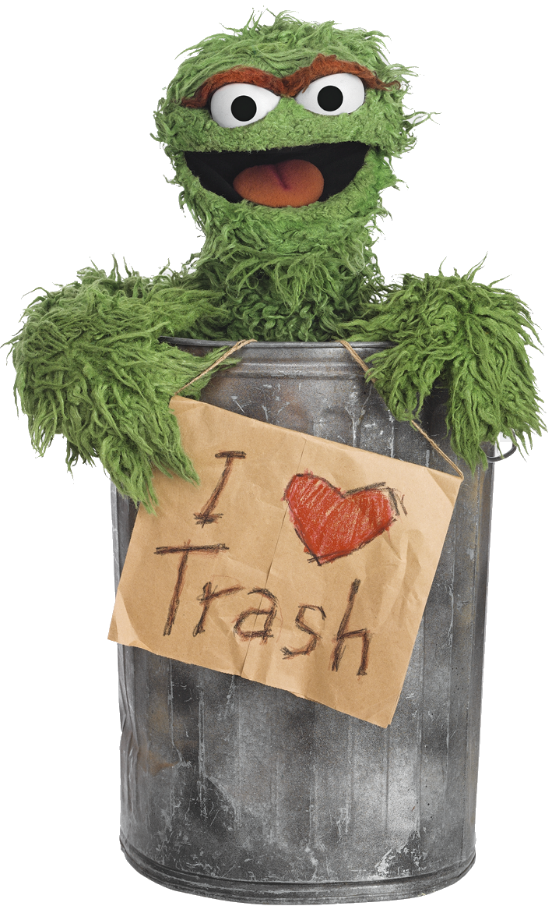

Foundations
Session 2: Data processing
Joshua Wilson Black ![]()
Te Kāhui Roro Reo | New Zealand Institute of Language, Brain and Behaviour
Te Whare Wānanga o Waitaha | University of Canterbury
Overview
Overview
tidyverseand base R.- Functions from two
tidyversepackages:dplyr: “a grammar of data manipulation”
- The ‘verbs’
tidyr: a tool to “help you create tidy data”
Code and slides
tidyverse
What is the tidyverse?
- A set of packages for R which follow a similar philosophy.
- they are ‘opinionated’ tools.
- These include:
dplyr- for data manipulationtidyr- for creating ‘tidy’ data
ggplot2- for plotting (see next week)
What is base R?
- …anything other than the
tidyverse - R has techniques for data processing built in.
- e.g., from last week, filtering with a Boolean vector.
- …or creating new columns.
Interaction between base R and the tidyverse
- A salient feature of tidyverse code:
%>%- the ‘pipe’ sends the output of one function as an input to another function.
- Comes with the tidyverse package
magrittr.
- This was so popular, there is now a base R version:
|>- Introduced in R 4.1.0.
dplyr
dplyr
- A ‘grammar’ for data manipulation.
- An abstract, universal, way of thinking about data problems and solutions.
- The core: a set of ‘verbs’ — things you can do to data.
- The ideal of
dplyr:- Reading: mostly human readable
- Writing: encourages us to break problems into a series of simple steps
Some verbs
- Here’s some
dplyrverbs:select(): select one or more columnsfilter(): filter datamutate(): create new columns
- We’ll learn how these work in context.
Pipes
- We string together verbs using pipes.
|>or%>%
- e.g.:
- NB: you can use variable names inside these functions (the
dplyr‘verbs’). - You don’t constantly have to type, e.g.,
toddlers$happiness.
Grouped data
- We can apply the same steps to groups in the data independently.
- e.g., apply a series of opperations separately to male and female experimental participants.
group_by(): Creates groups
- Some functions implicitly group…
count(age_in_months): if you had a column called ‘age_in_months’, this would group the data by the values inage_in_monthsand count how many rows there are in each group.
- Two kinds of pipe problem:
- Nothings coming through (i.e., you get an error message).
- Mysterious liquids (i.e., not what you expected and/or warning messages).
- Find an ‘inspection opening’
- Check output is correct at each step.
- Highlight parts of the pipe and press ‘Run’
Error in `filter()`:
ℹ In argument: `Island == "Torgersen"`.
Caused by error:
! object 'Island' not found- Error in
filter()? - In this case: misspelled column.
[1] NA NA NA NA NA NA NA NA NA NA NA NA NA NA NA NA NA NA NA NA NA NA NA NA NA
[26] NA NA NA NA NA NA NA NA NA NA NA NA NA NA NA NA NA NA NA NA NA NA NA NA NA
[51] NA NA- Where’s my mean bill length!?
tidyr
‘tidy’ data
Tidy data is data where:
- Each variable is a column; each column is a variable.
- Each observation is a row; each row is an observation.
- Each value is a cell; each cell is a single value.
By contrast:
- Storing data in column names
- More than one variable stored in a column.
- Different ‘observational types’ in one dataframe.
- e.g. Participant info + tokens
- For more, see: https://tidyr.tidyverse.org/articles/tidy-data.html
- It’s possible to worry too much about this…

Pivoting

- Are our ‘observations’ participants, vowel tokens, or individual formant readings.
- Varies with context and sometimes we need to switch between contexts.
- Wider data has more columns and (usually) fewer rows.
- Longer data has fewer columns and (usually) more rows.
tidyrprovides the functionspivot_wider()andpivot_longer().
Image source: Gavin Simpson via Garrick Aden-Buie’s (@grrrck) Tidy Animated Verbs modified by Mara Averick (@dataandme)
What now?
What now?
- Work through material at https://nzilbb.github.io/statistics_workshops/chapters/data_processing.html
- The script in
scripts/data_processing.Rcontains some of the code already. - The data is in the
datadirectory.
References
Allaire, JJ, Yihui Xie, Christophe Dervieux, Jonathan McPherson, Javier Luraschi, Kevin Ushey, Aron Atkins, et al. 2024. rmarkdown: Dynamic Documents for r. https://github.com/rstudio/rmarkdown.
Müller, Kirill. 2020. here: A Simpler Way to Find Your Files. https://doi.org/10.32614/CRAN.package.here.
R Core Team. 2025. R: A Language and Environment for Statistical Computing. Vienna, Austria: R Foundation for Statistical Computing. https://www.R-project.org/.
Wickham, Hadley, Mara Averick, Jennifer Bryan, Winston Chang, Lucy D’Agostino McGowan, Romain François, Garrett Grolemund, et al. 2019. “Welcome to the tidyverse.” Journal of Open Source Software 4 (43): 1686. https://doi.org/10.21105/joss.01686.
Xie, Yihui, J. J. Allaire, and Garrett Grolemund. 2018. R Markdown: The Definitive Guide. Boca Raton, Florida: Chapman; Hall/CRC. https://bookdown.org/yihui/rmarkdown.
Xie, Yihui, Christophe Dervieux, and Emily Riederer. 2020. R Markdown Cookbook. Boca Raton, Florida: Chapman; Hall/CRC. https://bookdown.org/yihui/rmarkdown-cookbook.
Zhu, Hao. 2024. kableExtra: Construct Complex Table with “kable” and Pipe Syntax. https://doi.org/10.32614/CRAN.package.kableExtra.